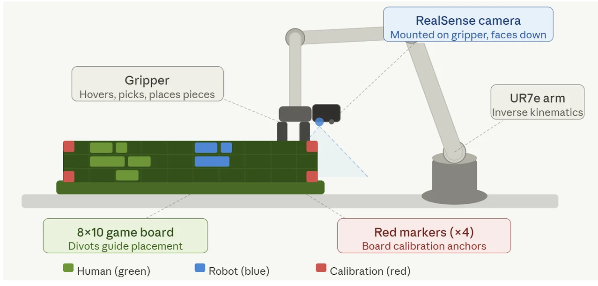

Robotic Blokus Opponent
An autonomous robotic opponent that uses computer vision, strategic game logic, and motion planning to challenge human players in Blokus.

How it Works
The RealSense camera captures RGB and depth images of the game board, allowing the system to detect colored pieces and estimate their positions and orientations. These positions are converted from camera coordinates into the robot's world coordinate system using TF2 transformations.
Custom game logic maintains the board state, evaluates valid moves, and selects a placement for the robot. ROS2 and MoveIt then generate the joint trajectories needed to guide the UR7e arm toward the selected piece, grasp it, and position it on the board.
Once the piece is placed, the camera observes the updated board and the process repeats, allowing the robot to respond to the human player's moves.
Components
Computer Vision & Block Detection
An Intel RealSense depth camera provides RGB and depth data of the playing area. OpenCV-based color detection identifies game pieces, while filtering, cropping, and centroid calculations estimate their locations. These measurements are transformed into the robot's coordinate frame using TF2, allowing visual detections to become physical pick-and-place targets.
Motion Planning & Robotic Manipulation
The UR7e robotic arm uses a parallel gripper to manipulate the game pieces. ROS2 handles communication between the software components, while MoveIt calculates inverse kinematics and plans collision-aware trajectories. Robot models and visualization tools in RViz help validate target positions and planned movements before execution.
Game Logic & Autonomous Control
Custom game logic maintains a digital representation of the Blokus board, checks potential placements against the game's rules, and selects moves for the robot. The system connects these decisions to physical actions by identifying the required piece, determining its target position, and coordinating the robot's pickup and placement sequence.
My Contributions
My teammates and I worked equally across perception, coordinate transforms, game logic, motion planning, and integration.
Computer Vision & Perception
- Collaborated on the development and testing of computer vision methods for identifying Blokus pieces and estimating their positions.
- Worked with RGB and depth data to support block detection, coordinate estimation, and robotic manipulation.
Robotics & Motion Planning
- Contributed to integrating the UR7e robotic arm with ROS2 and MoveIt for automated pick-and-place operations.
- Worked on coordinate transformations, inverse kinematics, and robot motion planning to translate detected block locations into physical movements.
System Integration & Testing
- Collaborated on connecting perception, game logic, and robot execution into a unified system.
- Participated in testing and troubleshooting block detection, calibration, grasping, and placement accuracy.
- Helped refine the system through iterative testing and evaluation of robotic performance.